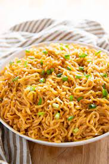

Garlic Sesame Ramen

Description
This is an easy way to still make a cheap ramen recipe while also elevating it past just making the ramen packets. I loved eating this
while I was in college and still to this day it is quick and easy to make. It requires only a few ingredients other than the normal ramen
packages, so it works well for being in the dorms also. A huge hit, but it does require someone to be in the mood for it.
Ingredients
- 3 blocks of ramen noodles
- 2 tsp minced garlic
- 2 Tbsp sesame oil
- 1 tsp brown sugar
- 1/4 cup soy sauce
- I like to add some spice, so I use some sriracha
- Optional eggs or tofu to add in
- optional sesame seeds or green onions
Steps
- Bring water to a boil and add in ramen, drain when done
- If you are using eggs or tofu, scramble the eggs or fry the tofu at this point as well (I cook mine in the sesame oil)
- When the eggs and tofu are done, add in the garlic and let it cook for 1-2 minutes, then add the sauce ingredients and cook until slightly thicker
- Add in the noodles and stir to combine and coat with the sauce
- Top with sesame seeds and or green onions and serve warm!